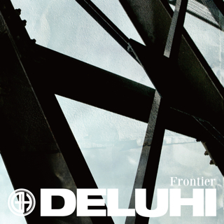
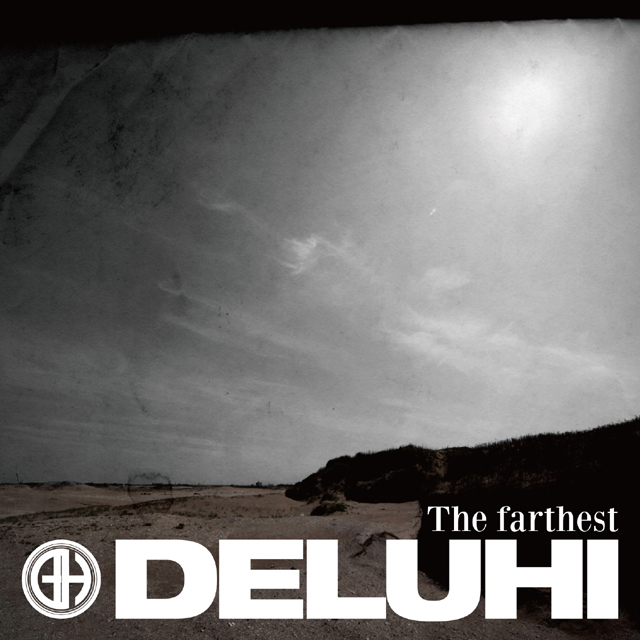
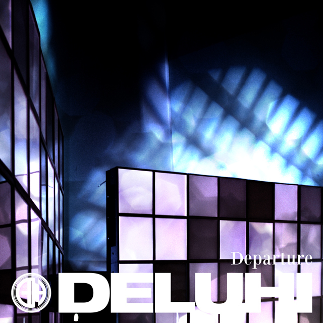

DELUHI (デルヒ) - J-Rock/Visual Kei
Os DELUHI, antes conhecidos por GRAVE SEED, são uma banda visual kei que tem mostrado um talento prometedor desde a sua formação em 2008. Muito do charme da banda vem dos talentos de composição de Leda (que também é conhecido como Yu-to, baixista dos Galneryus) combinado com outros três músicos talentosos.
Integrantes


Principais Albuns
 